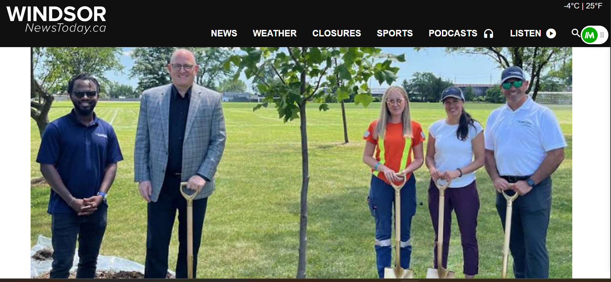

News
City celebrates end of tree planting season with 1400th tree
Windsor News Today / Blackburn News
June 25, 2024
Dr. Adeyeye joined the Mayor of Windsor and city officials in celebrating the planting of the 1,400th tree of the season, marking significant progress toward the annual goal of 2,500 large caliper trees.
Read Article